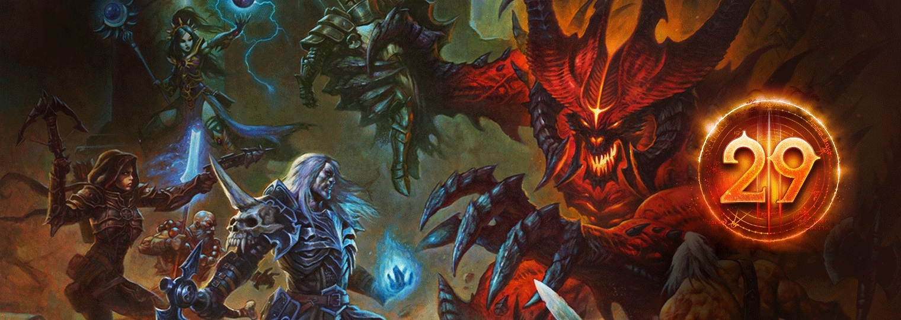
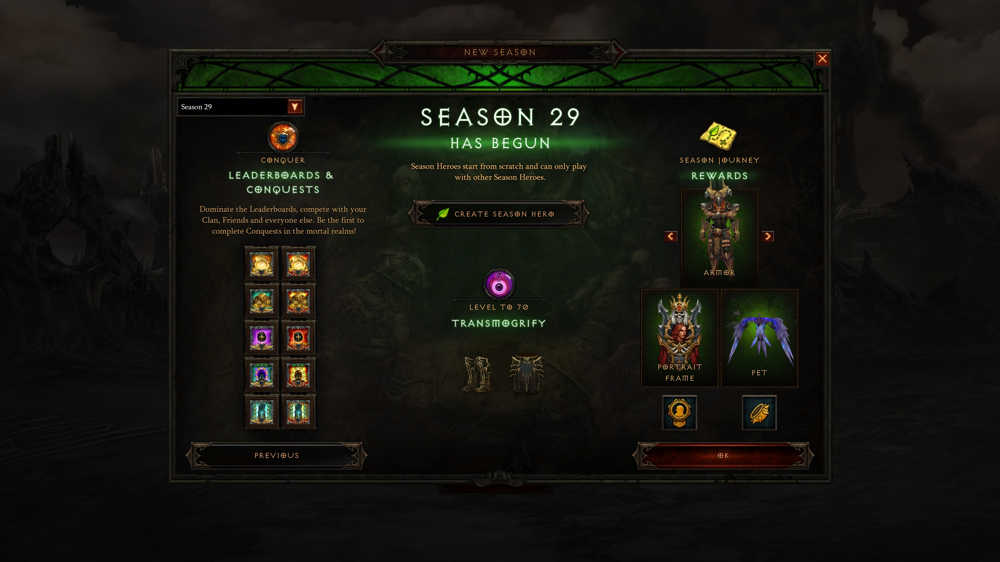
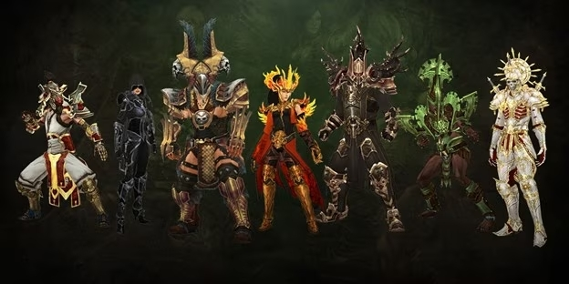
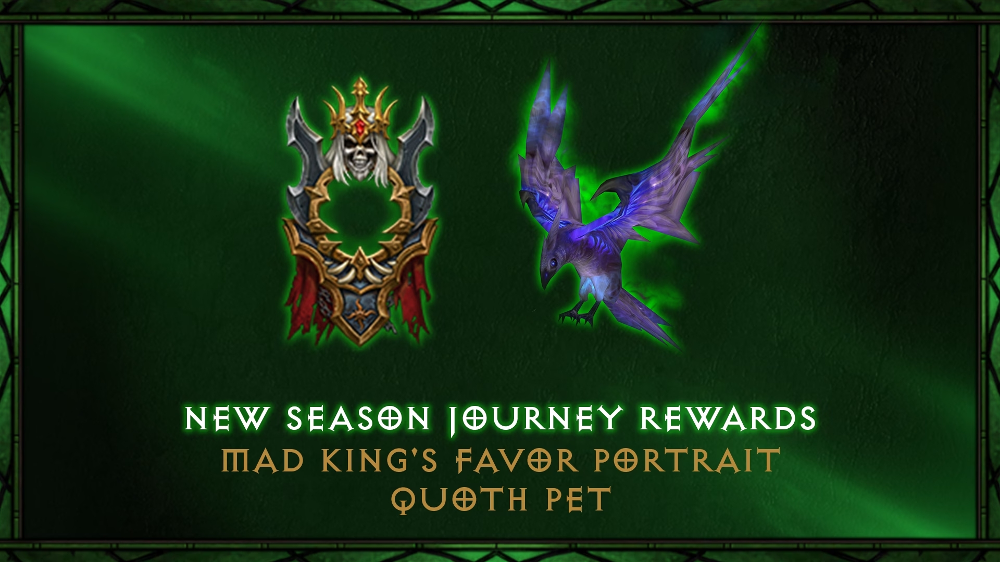

A temporada começa em:
Dias Horas Minutos Segundos
Introdução à Temporada 29: Visões da Hostilidade
Bem vindo a temporada 29 de Diablo III, Nefalem!
A Temporada 29 de Diablo III, intitulada "Visões da Hostilidade," é um marco na longa e tumultuada história do jogo. Com lançamento previsto para 15 de setembro às 21h (horário de Brasília), essa temporada é mais do que apenas uma atualização; ela é um prelúdio para o futuro do Diablo III. Nefalens de todo o mundo estão se preparando para embarcar nesta jornada, armados até os dentes, prontos para enfrentar as novas e aterrorizantes ameaças que espreitam nas sombras.
Ao longo dos últimos 11 anos, Diablo III passou por várias metamorfoses. Cada temporada adicionou uma nova camada de complexidade e desafio ao jogo, seja através de novos temas que ressaltam aspectos únicos da jogabilidade, atualizações que aprimoram a qualidade de vida dos jogadores ou eventos temáticos que oferecem uma pausa bem-vinda da rotina de massacre de demônios.
A Temporada 29 não é uma exceção; ela é, na verdade, um divisor de águas. Esta temporada não apenas introduzirá um novo tema chamado "Visões da Hostilidade", mas também lançará o modo de jogo "Solo Independente". Este novo modo permitirá que os jogadores enfrentem os desafios do Santuário sem o auxílio de outros nefalens. É uma verdadeira prova de habilidade e coragem, destinada aos jogadores que desejam experimentar Diablo III em sua forma mais pura e desafiadora.
Além disso, a Temporada 29 também apresenta mudanças significativas no "Limite de Excelência," oferecendo aos jogadores mais liberdade e flexibilidade na personalização de seus personagens. A atualização do limite permitirá que os jogadores distribuam até 800 pontos de excelência entre várias categorias, permitindo uma personalização mais profunda e estratégica.
E isso não é tudo. A Temporada 29 também vem com uma série de recompensas cosméticas e de jornada de temporada para manter os jogadores engajados. Desde a mascote do Velho Crescente até as Asas Galácticas, os jogadores terão uma infinidade de maneiras de personalizar seus personagens e se destacar no campo de batalha.
Para aqueles que estão familiarizados com as jornadas de temporada passadas e alcançaram a categoria de "Conquistador," há boas notícias. Concluindo esta categoria na Temporada 29, você poderá desbloquear uma aba adicional para seu baú, permitindo ainda mais espaço para armazenar seus itens valiosos.
Com tantas atualizações emocionantes e conteúdo novo para explorar, a Temporada 29 é, sem dúvida, um dos capítulos mais emocionantes da saga Diablo III. Prepare-se para mergulhar de cabeça nesta nova aventura e descobrir por si mesmo o que as "Visões da Hostilidade" têm reservado para você.
O Tema da Temporada 29: Visões da Hostilidade
A Temporada 29 introduz um novo e intrigante tema chamado "Visões da Hostilidade," uma novidade que altera a forma como os jogadores interagem com o mundo de Santuário. Este tema centra-se em portais misteriosos conhecidos como "Fendas Diabólicas," que começaram a aparecer em locais variados.
Mas o que são essas Fendas Diabólicas? São portais que surgem de forma aleatória e imprevisível, emitindo um brilho sinistro acompanhado de um zumbido quase hipnótico. Quando você se aventura através de um desses portais, é transportado para uma dimensão completamente diferente, repleta de memórias perigosas do seu passado e emissários demoníacos que desejam nada menos do que a sua aniquilação.
A aventura nessas Fendas não é para os fracos de coração. Os jogadores terão de enfrentar inimigos fortalecidos com novos afixos, tornando-os ainda mais letais. Um exemplo é o afixo "Enervante," que reduz drasticamente a velocidade de movimento e recarga do jogador, e "Necrótico," que diminui a eficácia da cura e aplica um dano ao longo do tempo devastador.
O risco, no entanto, vem com recompensas. As Fendas Diabólicas são ricas em tesouros e equipamentos, oferecendo aos jogadores a oportunidade de adquirir itens poderosos que os ajudarão em sua jornada através do Santuário. Além disso, as Fendas podem se tornar ainda mais instáveis à medida que você lança inimigos dentro delas, potencialmente abrindo mais Fendas e aumentando suas chances de obter equipamentos valiosos.
"Visões da Hostilidade" não é apenas um tema; é uma revolução na forma como Diablo III é jogado. Ele adiciona uma nova camada de complexidade e estratégia, exigindo que os jogadores estejam sempre em alerta e prontos para enfrentar o desconhecido. Este tema não apenas redefine o que significa ser um Nefalem, mas também desafia os jogadores a reconsiderar suas táticas e abordagens à medida que navegam por este novo e emocionante elemento do jogo.
Prepare-se para embarcar em uma jornada através dessas Fendas Diabólicas e enfrentar os desafios que esperam por você do outro lado. Com riscos elevados e recompensas ainda maiores, a Temporada 29 promete ser uma das mais emocionantes e gratificantes até agora.
Recompensas Exclusivas da Temporada 29
A Temporada 29 não é apenas marcante pelo seu tema envolvente, mas também pelas recompensas exclusivas que ela oferece. Esta Temporada traz uma série de recompensas cosméticas e funcionais que vão desde as asas celestiais até mascotes enigmáticos.
Começando com as recompensas cosméticas, esta Temporada apresenta as "Asas Galácticas", uma recompensa celestial que permitirá que você explore o Santuário com um toque de majestosidade cósmica. Além disso, há a mascote do "Velho Crescente", que não só adiciona um elemento de charme ao seu personagem, mas também oferece um impulso místico.
Mas isso não é tudo; também há o retrato de "Grotagris", que você pode exibir com orgulho como prova de suas conquistas nesta Temporada. As recompensas de "Fim de Jornada" são igualmente impressionantes, incluindo a mascote Corvo e o retrato do "Favor do Rei Louco", reservados para aqueles que mostram verdadeiro empenho e dedicação ao jogo.
A jornada de temporada também oferece recompensas funcionais, incluindo "Dádivas de Haedrig", que fornecem conjuntos de classe completos. Dependendo da classe do seu personagem, você poderá receber conjuntos como "Poder da Terra" para Bárbaros ou "O Manto da Sombra" para Caçadores de Demônios. Essas Dádivas são uma maneira excelente de melhorar o seu personagem e oferecem um caminho acelerado para enfrentar desafios mais difíceis.
Além das Dádivas, a Temporada 29 introduz uma série de Proezas de Temporada e desafios que oferecem ainda mais oportunidades para ganhar recompensas. Completando estes desafios, você não só poderá aumentar sua aba de baú, mas também desbloquear habilidades e itens exclusivos que irão incrementar sua experiência de jogo.
As recompensas da Temporada 29 são projetadas para engajar tanto novatos quanto veteranos, fornecendo incentivos que vão além do mero acúmulo de poder. Elas capturam a essência do que torna Diablo III uma experiência rica e recompensadora, promovendo uma jogabilidade que é tanto desafiadora quanto gratificante.
Em resumo, a Temporada 29 é uma festa de recompensas que qualquer jogador de Diablo III não vai querer perder. Com uma gama tão diversificada de prêmios para desbloquear, esta Temporada promete manter você colado ao seu dispositivo por horas a fio.
Conquiste as Proezas da Temporada 29
A Temporada 29 de Diablo III não é apenas uma corrida para o poder e as recompensas; é também um campo de batalha onde suas habilidades, estratégias e reflexos rápidos são postos à prova. As Proezas da Temporada são desafios meticulosamente elaborados que oferecem uma reviravolta emocionante na jogabilidade habitual.
Entre os destaques deste ano, temos a proeza "Avareza", que desafia os jogadores a coletar 50 milhões de Ouro fora da Câmara do Tesouro e do Santuário Interno. Se você está em busca de um desafio de verdade, tente a variante Hardcore dessa proeza, conhecida como "Avarícia".
Para os caçadores de demônios entre vocês, a proeza "Anos de Guerra" vai exigir que você alcance a Fenda Maior 55 Solo com os bônus completos de seis dos seguintes Conjuntos de Classe. Não é para os fracos de coração, mas as recompensas são igualmente épicas.
Se você é um jogador solo, a proeza "Sobre-humano" vai chamar sua atenção. Este desafio requer que você alcance a Fenda Maior de Nível 45 Solo sem nenhum Item de Conjunto equipado. É a oportunidade perfeita para mostrar suas habilidades estratégicas e seu entendimento profundo dos mecanismos do jogo.
Além dessas, há várias outras proezas que abrangem tudo, desde matar bosses específicos em um tempo limitado até completar Fendas Nefalem em níveis de dificuldade elevados. Cada proeza concluída não apenas confere um senso de realização, mas também recompensas substanciais que vão desde abas de baú adicionais até itens lendários exclusivos.
As Proezas da Temporada são mais do que apenas desafios; elas são uma forma de aprofundar sua compreensão de Diablo III e aperfeiçoar suas habilidades. Elas também proporcionam uma forma divertida e recompensadora de engajar com a comunidade, seja competindo nas tabelas de classificação ou colaborando para completar proezas coletivas.
Em resumo, as Proezas da Temporada 29 oferecem uma dimensão adicional à experiência de Diablo III, tornando cada momento no jogo uma oportunidade para o crescimento pessoal e a glória eterna.
Notas do Patch 2.7.6 para a Temporada 29
A Temporada 29 é uma das mais ambiciosas em termos de atualizações e melhorias. O patch 2.7.6 introduz uma série de alterações que afetam todas as versões de Diablo III. Aqui estão os destaques.
Solo Independente
Uma das adições mais notáveis é o modo de jogo Solo Independente. Este modo desafiador oferece uma experiência puramente solo, sem bônus de experiência de grupo ou proteção de outros jogadores. Além disso, ele vem com sua própria Tabela de Classificação exclusiva, tornando cada segundo na arena solo uma competição acirrada.
Limite de Excelência
As mudanças no sistema de pontos de excelência são projetadas para funcionar em harmonia com o Solo Independente e o novo tema da Temporada. Agora, os jogadores podem atribuir até 800 pontos de excelência ao seu personagem, proporcionando uma liberdade de personalização nunca antes vista.
Mudanças Pautadas pela Comunidade
A comunidade sempre foi o coração de Diablo III, e as mudanças pautadas pela comunidade neste patch refletem isso. Desde ajustes em monstros até melhorias de qualidade de vida, como a remoção de Mestre dos Mestres da jornada de temporada, estas mudanças são resultado do feedback contínuo dos jogadores.
Balanceamento de Classe
Este patch traz várias atualizações de balanceamento para as classes Cruzado, Caçador de Demônios e Feiticeiro. Estas mudanças estão destinadas a revitalizar os builds existentes e a incentivar novas abordagens estratégicas.
Correção de Bugs
Um jogo tão complexo quanto Diablo III está sempre em evolução, e este patch não é exceção. Além das adições e melhorias, o patch 2.7.6 também traz várias correções de bugs que visam melhorar a estabilidade e a jogabilidade.
No geral, o Patch 2.7.6 para a Temporada 29 está repleto de conteúdo emocionante e mudanças que prometem elevar sua experiência de jogo a um novo patamar. Este é um momento emocionante para ser um fã de Diablo III, e não poderíamos estar mais animados para ver como estas mudanças vão moldar o futuro do jogo.